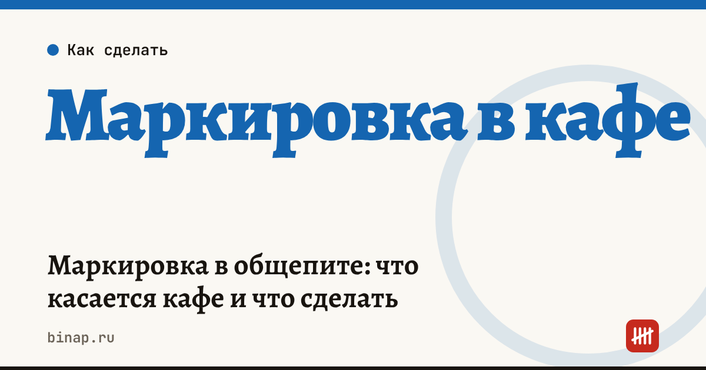

Маркировка в общепите: что касается кафе и что сделать

Кафе редко само выпускает маркированный товар, но почти всегда его покупает: воду, соки, молочную продукцию, пиво, масло. Поэтому общепит — участник системы «Честный знак»: принимает товары по электронным документам, а часть из них выводит из оборота при продаже или использовании. Ниже — что касается кафе и что проверить, чтобы не получить штраф за товар без учёта.
Коротко
- Кафе, которое покупает маркированные товары, должно быть зарегистрировано в «Честном знаке» и принимать УПД от поставщиков через ЭДО.
- Приёмку нужно подтвердить в системе: без этого товар числится за поставщиком.
- Если продаёте маркированный товар в упаковке навынос (вода, соки, молочка) — код сканируют на кассе, как в магазине.
- Для разливного пива в «Честном знаке» регистрируют вскрытие кеги.
- Товары, которые используете для приготовления блюд, выводят из оборота по правилам товарной группы — порядок уточните в личном кабинете «Честного знака».
Сроки, изменения и разборы для ИП и самозанятых — каждое утро в Telegram и MAX. Подпишитесь, чтобы не пропустить.
Какие маркированные товары бывают в кафе
| Товар | Как появляется в кафе | Что делать |
|---|---|---|
| Упакованная вода, соки, напитки | продажа гостю в бутылке | принять по ЭДО, продавать через кассу со сканированием кода |
| Молочная продукция | ингредиент блюд и напитков, иногда продажа навынос | принять по ЭДО; при продаже — через кассу, при использовании в блюдах — вывод по правилам группы |
| Пиво в кегах | разлив | принять по ЭДО, зарегистрировать вскрытие кеги |
| Пиво и напитки в бутылках | продажа гостю | принять по ЭДО, продавать через кассу со сканированием |
| Растительное масло | ингредиент | принять по ЭДО; сроки и порядок для этой группы — в статье маркировка растительного масла |
Что нужно для работы
- Усиленная электронная подпись руководителя или ИП и регистрация в «Честном знаке».
- ЭДО с поставщиками: маркированный товар приходит только с электронным УПД.
- Касса с прошивкой для маркировки и сканер, который читает коды Data Matrix, если продаёте товар в упаковке.
- Проверка кодов на кассе. Для ряда групп касса перед продажей проверяет код в системе — уточните у поставщика кассы, настроена ли эта проверка. Что сравнить при выборе кассы и учётной системы — в статье Касса и учёт для кафе.
- Ответственный за приёмку УПД: если поставщик прислал документ, а кафе его не подписало, в системе остаётся расхождение.
Частые ошибки
- Подписали бумажную накладную, а электронный УПД оставили без ответа. Для системы товар так и не пришёл в кафе.
- Продали бутылку воды «по свободной цене» без сканирования. Это продажа маркированного товара без передачи сведений.
- Не зарегистрировали вскрытие кеги перед подключением к оборудованию.
- Списали испорченный товар только в своём учёте, а в «Честном знаке» он остался на остатках.
Штрафы за оборот маркированного товара без учёта — в статье Штрафы за маркировку. Как маркированные позиции влияют на себестоимость блюд — в калькуляторе фудкоста. Все материалы — в разделе Общепиту.
Частые вопросы
Кафе обязано маркировать свои блюда? Нет. Маркировка касается товаров, которые кафе покупает или продаёт в заводской упаковке, а не блюд собственного приготовления.
Что делать, если поставщик прислал УПД с ошибкой? Не подписывайте его, а отклоните с комментарием и попросите исправленный документ. Подписанный УПД с неверными кодами потом сложнее исправить.
Нужна ли касса с маркировкой, если продаём только кофе и выпечку собственного приготовления? Для продажи немаркированных блюд — нет. Но если продаёте упакованную воду или соки — да.